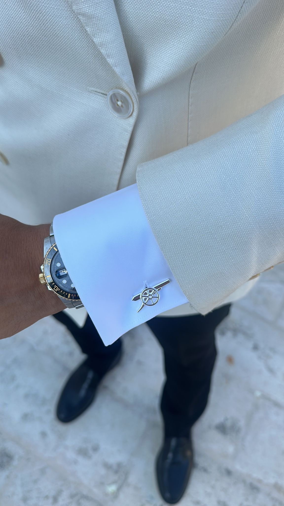

Sopurchi Emmanuel

Summary
I am a dedicated and consistent, always focused on improving and delivering quality work in digital drawing and virtual assistant tasks.
Education
- Bachelor of Science, Microbiology and Brewing - Nnamdi Azikiwe University (2020-2023)
Work Experience
- Digital Drawing (Freelance/Personal Projects)
May 2022 - June 2024
- Created character sketches, concept art and simple illustrations
- Practiced using drawing tool like Adobe Fresco
- Shared art on social platforms
Skills
- Basic digital illustration✅
- Time management✅
- Communication✅
- Task organization✅
- Familiar with tools like Google Docs, Canva and Adobe Fresco✅
Award and Certifications
- Virtual Assistant Certificate - ALX Africa (2024)
- Positive Feedback on Art Projects - personal and online recognition (2023)
Other
© Sopuruchi Emmanuel. All rights reserved.